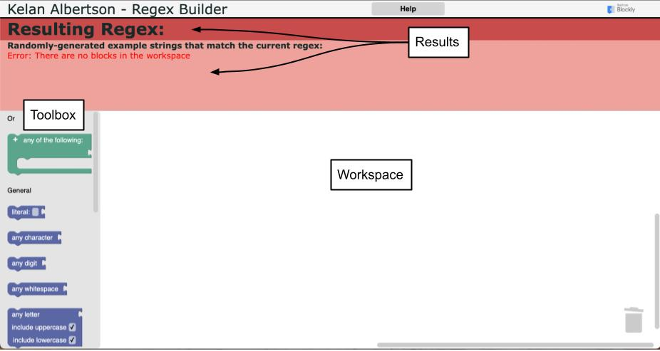

How to Use
×
To use this tool, assemble blocks into a stack from top to bottom, representing the pattern of characters
that you need your regular expression to match.
The toolbox on the left holds all of the available blocks. Drag blocks from the toolbox into the
workspace on the right to use them. When blocks are close enough and compatible, they will connect.
Connect blocks top to bottom to represent subsequent characters in the pattern you want your regex to match.
Some blocks can also connect side to side or inside other blocks. Those connections are inputs that
modify the result of the block they connect into. Assemble a stack of blocks representing your pattern
by adding, removing, linking, arranging, and modifying blocks in the workspace and the outputs will be
updated in the red results section at the top of the page. You can have multiple stacks of blocks in the workspace
at a time, but only the highest stack will be active.

I find that the easiest way to think through this is to only think about the pattern of characters that
you want to match. Each character of your pattern has constraints on what it can and cannot be. The blocks
represent those constraints and so building a stack of blocks vertically from top to bottom is essentially like
listing the constraints on each character of a pattern one by one. So if you think through what each character
can and cannot be, you should be able to locate the block (or possibly blocks) representing that, drag it into
the workspace, add input if necessary, and then move on to assemble the next character’s constraints the same way.
For example, if you want to match the general pattern of an email address (somestring@example.com), then
your pattern would be:
1. any number of word characters (this is any letter, any digit, or an underscore so that we can avoid special characters and spaces)
2. an at symbol
3. any number of word characters again
4. a dot symbol
5. any number of word characters (although realistically this would most likely be "com" or "org" or "net")
To generate the regex that would match any string that fits this general pattern, you would use:
1. the "any word character" block with a "1 or more" quantifier attached on the right
2. the "exact match" block and type an at symbol (@) in the input text field
3. the "any word character" block with a "1 or more" quantifier attached on the right again
4. the "exact match" block and type a dot symbol (.) in the input text field
5. the "any word character" block with a "1 or more" quantifier attached on the right once more
Here that is in action:

The resulting regex is provided in the top, darker red section and the resulting example strings that
would be matched when using that regex are dispalyed below that in the lighter red section. A great way to
verify that your blocks represent what you intended to create is to check that the generated example
strings fit the pattern that you set out to create.
Here are some other clips of example block assemblies:
To match the word fat, cat, or hat (NOTE: this is a great example of how to use the OR block!):

To match a phone number in a variety of formats (international code is optional, parentheses around number
groups is optional, and separating number groups with a space or a dash is optional):